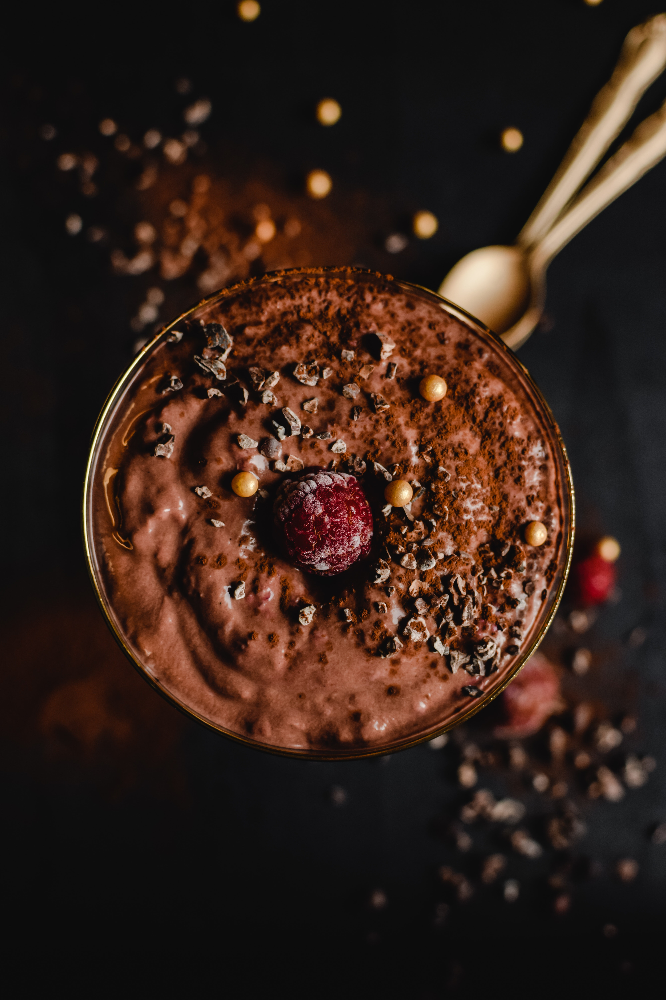

The Ultimate Smoothie

The perfect avocado, peanut and chocolate milkshake for a ketogenic diet.
This recipe meets the RDI for most nutrients although it might carry a
little more saturated fat than desired. With 1900kcal, it's also convenient
for someone who's trying to implement an OMAD diet.
Ingredients
- 500ml Low Fat Milk
- 2 Large Avocadoes
- 200g of roasted peanuts
- Unsweetened Cocoa Powder
- Natural Sweetener of your choice
- Water and Ice Cubes
Steps
- Add the milk and peanuts to a blender
- Blend to a smooth consistency
- Chop the Avocadoes into the mixture
- Add 6 tablespoons of cocoa powder
- Add water in one cup increments and blend until the desired consistency is achieved
- Add the Sweetener in 2 tablespoon increments and blend until your desired taste is achieved